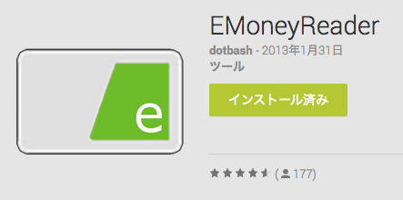
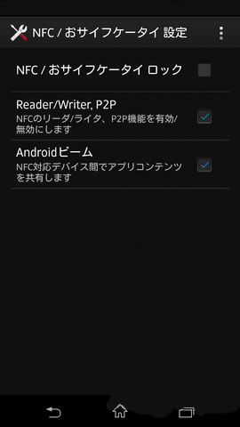
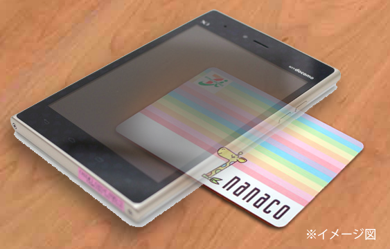
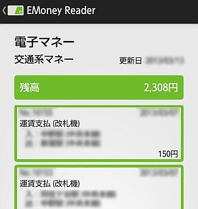

2013-12-05
AndroidでICカードの残高と履歴を読み取る『EmoneyReader』

電車に乗る時、買い物などで、SuicaやnanacoなどのICカードの残高が足りなくて焦ったことはありませんか？
そんなときに便利なアプリが、『EmoneyReader』です。
使い方
まず、準備は次のとおりです。
- Google Play からインストール
- アプリを起動後、アプリ内の設定から「Reader/Writer,P2P」を有効にする

もしこれで以下でエラーが出る場合は、後者の設定から「Androidビーム」も有効にしてみてください。（機種によっては全く反応しない場合もあるようです）
実際に読み取る
読み取るには、アプリを起動したまま、スマホの裏にICカードを２、３秒ほど近づけます。

すると、次のような情報が表示されます。

かなり詳細な情報が表示されて、ちょっとびっくりしますね。
でも、残高を自宅で簡単に確認できるのは便利です。
まとめ
AndroidでICカードが読み取れるということは、最初は全く知りませんでした。
スマホの便利機能が１つ追加されたという感じですね。
ただ、悪用されないかがちょっと心配です（- o -;）

Android NFCプログラミング完全ガイド (Smart Mobile Developer)
posted with amazlet at 14.01.17
株式会社 Re:Kayo-System
翔泳社
売り上げランキング: 72,049
翔泳社
売り上げランキング: 72,049
comments powered by Disqus